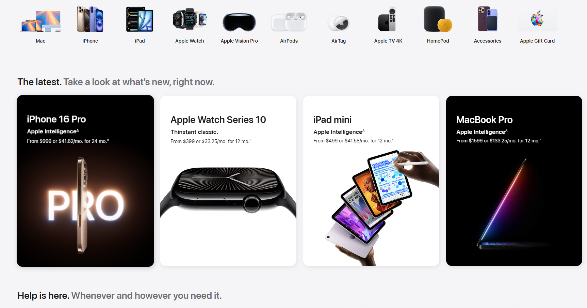
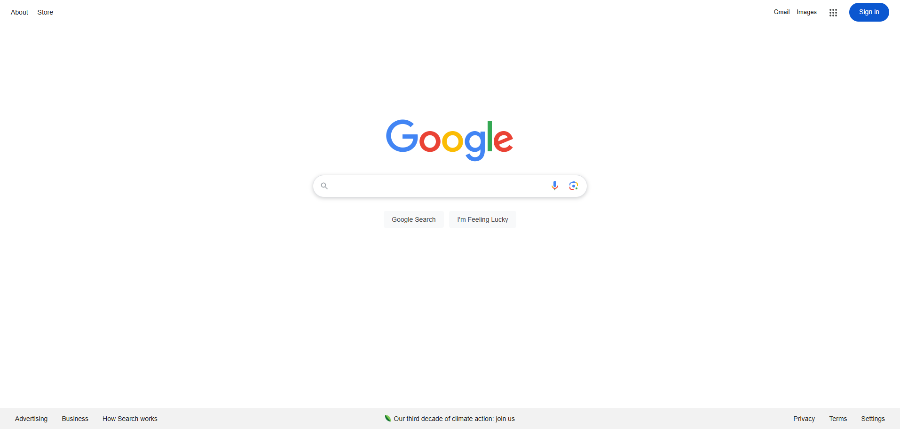
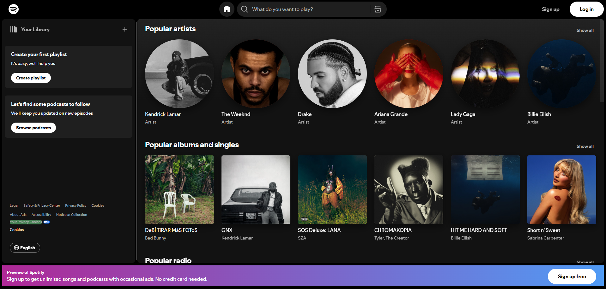

Visual Hierarchy
Organization: Apple
Apple's website demonstrates Visual Hierarchy through bold headlines, high-quality product images, and strategic use of size and contrast to draw attention to key elements like product names and calls-to-action. Ample whitespace and clean layouts further guide users' focus, ensuring the most important information stands out.
Hick's Law
Organization: Google
Google's homepage demonstrates Hick's Law by offering a single, clear action—using the search bar—without overwhelming users with excessive choices. Its minimalist design reduces cognitive load, allowing users to quickly focus on their primary task.
Contrast
Organization: Spotify
Spotify's website demonstrates Contrast through its use of bold greens and whites against dark backgrounds, making text and buttons stand out prominently. The clear separation of elements using contrasting colors ensures readability and guides users' attention to key actions like signing up or exploring features.